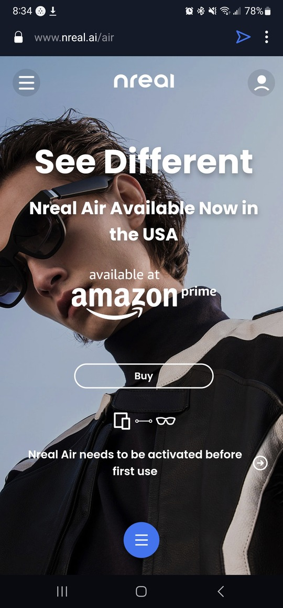
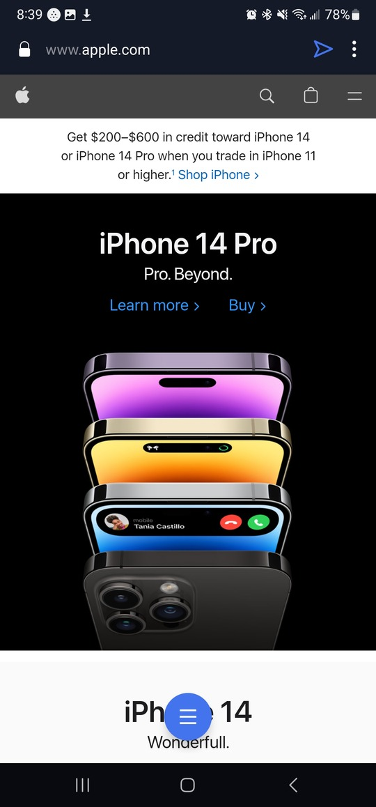

Fitt's Law
Samsung
samsung.comHick's law is used very well on Samsung’s website, especially on the mobile version. There are very few options available to click on and every one of them bring you to the store page. The first thing I saw when I opened up the website was a massive image advertising one of their products. This advertisement slowly moved from one ad to the next. This gives the user many different options while not overwhelming them with to many choices all at once. At the top of the site on mobile there is a button that brings up a drop down menu. There aren’t very many options here. They keep things very general and go specific as you move forward. This also limits the amount of options you have available to you at any given moment. It makes it easy ans simple to find what I need.
Rule of Thirds
Nreal
nreal.com/air Nreal uses images almost exclusively to fill the content on their web pages. Almost every single one follows the rule of thirds to its advantage. The page I linked to is one of their products and in almost every photo the glasses appear at the intersections of the grid lines. It helps us as the viewers know exactly what is being talked about. I also think the repetition of the rule of thirds is very powerful here. By the time you have made it to the bottom of the page the glasses have appeared in all four intersections. Even the ever important buy button appears along the bottom grid line in the images it is a part of.
White Space and Clean Design
Apple
apple.com White space is used to great effect all over this website. The main page displays its main products with negative space on either side. It makes the colors of the phones stand out quite a bit. On the mobile version when the menu is opened up the white space is used there as well. It helps keep the website looking very professional. Even the menus on the larger screen have white space. It makes it really easy to tell which parts of the menu are grouped together and which ones are not. The design of the entire website looks as if clean design was the highest priority. There is rarely more content than is needed.